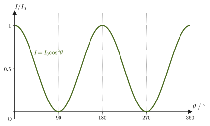
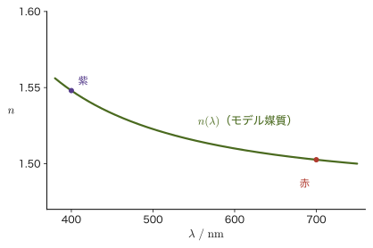

第13章光波の基礎 — 光速の測定と屈折率
前章（第12章）では，音波という縦波を通して，波の一般論（第11章）を具体的な現象に当てはめる練習をしてきた．この章から，もう一つの身近な波——光波（light wave）——を扱う．光は，音とはまったく違う顔をした波である．音は空気という媒質がなければ伝わらないが，光は真空中でも（むしろ真空中でもっとも速く）伝わる．音の速さは媒質と気温で決まり，音の高さ（振動数）にはよらないが，物質中の光の速さは媒質の種類と，実は光の色（波長）にもわずかに依存する（真空中では波長によらず一定の $c_0$ である）．そして，光が有限の速さで伝わることに気づくことさえ，人類にとっては簡単ではなかった——あまりに速すぎて，17世紀まで「光は一瞬で伝わる」と考える人も少なくなかったのである．
本章では，まず光波と音波の性質を比較し，光が横波であることから生じる「偏光」という現象を取り上げる．続いて，異なる物質の中での光の伝わりやすさを表す「絶対屈折率」を定義する——これは次章（光の反射と屈折）で本格的に使う道具であり，先に定義を押さえておくことで，このあとの話がすっきり見通せる．そのうえで，音波にはない「分散」（速さが波長によって変わること）という現象がなぜ起こるのかを考え，最後に，光の速さがどのように測定されてきたかを，歴史上の3つの方法——レーマーによる天文学的な方法（1676年），フィゾーの歯車を使った方法，フーコーの回転鏡を使った方法——に沿って追う．
この章で新しく必要になる数学はほとんどない（三角関数と比例関係が中心）が，1か所だけ，第7章で学んだ強制振動の結果を，電場を受けた電子の運動に応用する場面がある．そこだけは第7章7.4節を軽く振り返っておくとよい．
- 光波と音波の性質（横波・縦波，速さの依存要因，波長のオーダー）を比較し，それぞれの違いの物理的な理由を説明できる
- 偏光の意味を理解し，マリュスの法則を使って偏光板を通過した光の強度を計算できる
- 絶対屈折率の定義を理解し，1983年以降のメートルの定義に基づく光速の定義値を用いた計算ができる
- 音波がほとんど分散しないのに対し，なぜ光波は媒質中で分散するのかを，束縛された電子の強制振動という描像から説明できる
- レーマーによる光速の天文学的測定（木星の衛星イオの食のタイミングのずれ）の考え方を説明できる
- フィゾーの歯車を使った実験，および回転鏡を使った実験（フーコーの方法）の原理を理解し，装置のパラメータから光速を計算できる
13.1 光波と音波の比較
光もまた波の一種である．光がどのような実体の振動なのか（電場と磁場が振動する電磁波であること）は，次章以降で本格的に学ぶ（詳しいしくみは第V部（電磁気学）で扱う）．ここでは，第11章・第12章で扱ってきた「音波」と比べることで，光波の基本的な性質を確認しておこう．次の表は，波の種類・媒質中の速さ・波長のオーダーという3つの観点から，光波と音波を比較したものである．
| 項目 | 光 | 音 |
|---|---|---|
| 波の種類 | 横波である．したがって，偏り（偏光）の現象が生じる（13.2節）． | 気体・液体中の音は縦波であるから，偏りの現象は生じない． |
| 媒質中の速さ | 波長によって異なる．したがって，プリズムに通すと分散スペクトルができる（13.4節）． | 振動数や波長にはよらない．したがって，分散のような現象は起こらない． |
| 速さを決めるもの | 媒質と波長（色）．ただし真空中では波長によらず一定（$c_0$）． | 媒質と，媒質の温度（第12章12.1節）． |
| 波長のオーダー | 短い（$10^{-7}\sim10^{-6}\ \mathrm{m}$ 程度）． | 長い（$10^{-2}\sim10\ \mathrm{m}$ 程度）． |
波長のオーダーの違いは，回折（波が障害物の陰に回り込む現象，第11章11.9節）の目立ちやすさに直結する．障害物やすき間の大きさが波長に比べて十分大きいと，回折はほとんど目立たない．光の波長（可視光でおよそ$4\times10^{-7}\sim7\times10^{-7}\ \mathrm{m}$）は，ドアのすき間や身のまわりの物体の大きさ（$10^{-2}\sim1\ \mathrm{m}$ 程度）に比べて桁違いに短いので，光が物体の陰に回り込む様子は，特別な工夫（狭いスリットなど，第16章で扱う）をしない限り実用上ほとんど観測されない．一方，音の波長は身のまわりの物体の大きさと同じオーダーなので，塀の陰や開いたドアの向こうにいる人の声が，直接見えなくても普通に聞こえるように，回折が著しく現れる．
速さの依存要因の違いも重要である．音速は媒質（気体・液体・固体）の種類と温度で決まり，音の高さ（振動数）にはよらない（第12章12.1節，$V=331.5+0.6t\ [\mathrm{m/s}]$）．これに対して，物質中の光の速さは媒質の種類だけでなく，光の波長（色）にもわずかに依存する（真空中では，どんな色の光も同じ速さ $c_0$ で進む）．この違いの物理的な理由は13.4節で詳しく考える．
次に，表の1行目の「偏り」とは何かを確かめておこう．ひもの一端を手でもち，上下に振って波をつくると，ひもの振動は鉛直な1つの平面の中に限られる（図13.1(a)）．このひもを，鉛直方向に細長いすき間（縦スリット）のある板に通しても，ひもの上下の振動はそのまま通り抜ける．ところが，そのあとに水平方向に細長いすき間（横スリット）のある板を置くと，ひもは上下に動けないので，振動はここで止まってしまう．このように，横波の振動方向が1つの平面内に限られているとき，その波は「偏っている」という．
定義13.1 偏光
横波の振動方向（変位の向き）が，波の進む方向を含む1つの平面内に限られているとき，その波は偏光（polarized）している，または直線偏光（linearly polarized light）であるという（振動方向が時間とともに回る円偏光・楕円偏光もあるが，本書では直線偏光だけを扱う）．太陽光や電球の光のように，あらゆる方向の振動が混ざり合っている（特定の方向に偏っていない）光を，自然光（natural light）または非偏光という．気体・液体中の音は縦波であり，振動方向がつねに伝わる方向と同じ1本の直線上にしかとれないので，そもそも「振動面を選ぶ」余地がなく，偏光という現象自体が存在しない．
例題13.1 音と光の回折のしやすさ
気温 $20\ {}^{\circ}\mathrm{C}$ の空気中を伝わる，振動数 $440\ \mathrm{Hz}$（ピアノの中央のラの音）の音の波長 $\lambda_{\text{音}}$ と，振動数 $5.5\times10^{14}\ \mathrm{Hz}$ の光（緑色に見える光）の波長 $\lambda_{\text{光}}$（真空中）を求めよ．また，幅 $1.0\ \mathrm{m}$ 程度の開いたドアに対して，音と光のどちらが顕著に回折するか答えよ．
解答 第12章12.1節の式より，気温 $t=20\ {}^{\circ}\mathrm{C}$ での音速は
$$ V=331.5+0.6\times20=331.5+12=343.5\ \mathrm{m/s} $$である．波の基本関係 $V=f\lambda$（第11章11.4節）より，
$$ \lambda_{\text{音}}=\frac{V}{f}=\frac{343.5\ \mathrm{m/s}}{440\ \mathrm{Hz}}\approx0.78\ \mathrm{m} $$一方，光は真空中の速さ $c_0=299\,792\,458\ \mathrm{m/s}$（13.3節で改めて扱う定義値）を使って，
$$ \lambda_{\text{光}}=\frac{c_0}{f}=\frac{2.998\times10^8\ \mathrm{m/s}}{5.5\times10^{14}\ \mathrm{Hz}}\approx5.45\times10^{-7}\ \mathrm{m}\approx545\ \mathrm{nm} $$である（緑色の光の波長としておよそ $550\ \mathrm{nm}$ という覚え方と整合する）．ドアの幅 $1.0\ \mathrm{m}$ と比べると，$\lambda_{\text{音}}\approx0.78\ \mathrm{m}$ は同じオーダーなので，音はドアの陰まで著しく回折して回り込む（ドアの向こうの声が聞こえるのはこのため）．これに対して $\lambda_{\text{光}}\approx5.45\times10^{-7}\ \mathrm{m}$ はドアの幅の約 $1.8\times10^{-6}$ 倍（約180万分の1，6桁ほど小さい）にすぎないため，光の回折はほとんど無視でき，ドアの陰は（光がまっすぐ進むとして）ほぼ完全な影になる．
13.2 偏光とマリュスの法則
偏光をつくったり調べたりする道具が偏光板（polarizer）である．偏光板は，ある特定の向き——これを透過軸（transmission axis）という——に振動する成分だけを通し，それと垂直な向きの成分は（吸収して）通さない板である．透過軸が互いに直交するように2枚の偏光板を重ねた配置をクロスニコル（crossed Nicols）という（昔，方解石でできた「ニコルプリズム」を偏光をつくる素子に使っていたことに由来する名前で，いまの偏光板でもこう呼ぶ）．
偏光サングラスのレンズなどを2枚重ねて，1枚を回しながら明るい空にかざして見ると，明るさが変わり，$90^{\circ}$ 回したところで真っ暗になる．なぜ暗くなるのだろうか．偏光板を通り抜ける光の強さは，偏光板の透過軸の向きによって変わる．この関係を定量的に表すのが，次のマリュスの法則（Malus's law，1809年にフランスのマリュス（Malus）が発見）である．
導出：マリュスの法則
振幅 $E_0$ で直線偏光した光（振動方向は一定）が，透過軸が振動方向から角度 $\theta$ だけ傾いた偏光板に入射する場合を考える．波の振動を表す量（詳しくは電場だが，ここでは単に「振動の大きさ」と呼ぶ）は，透過軸方向の成分と，それに垂直な成分に分解できる．偏光板は透過軸に平行な成分だけを通すので，通り抜けたあとの振動の振幅は，入射した振幅 $E_0$ を透過軸方向に射影した
$$ E=E_0\cos\theta $$になる（角度 $\theta$ をなす2つの向きの間で，一方の成分をもう一方の向きに射影すると $\cos\theta$ 倍になることは，第I部でベクトルの内積を学んだときに確認した関係と同じである）．波の強さ（強度）$I$ は，同じ振動数の波どうしでは振幅の2乗に比例する（第11章11.5節，$I\propto A^2f^2$ の関係で，振動数 $f$ が同じなら $I\propto A^2$ である．光の場合は電場の振幅の2乗に比例する，と第V部で正確に学ぶ）．したがって，入射光の強度を $I_0\propto E_0^2$ とすると，透過光の強度は
$$ I\propto E^2=E_0^2\cos^2\theta\propto I_0\cos^2\theta $$となり，比例定数を確かめると（$\theta=0$ のとき透過軸と振動方向が一致し，光は減衰せずそのまま通り抜けるので $I=I_0$ でなければならない），
$$ I=I_0\cos^2\theta $$が得られる．
（導出終わり）
法則13.1 マリュスの法則
直線偏光した強度 $I_0$ の光が，振動方向から角度 $\theta$ だけ傾いた透過軸をもつ偏光板を通り抜けたあとの強度 $I$ は，
\begin{equation} I=I_0\cos^2\theta \label{eq:13-malus-thm} \end{equation}である．とくに $\theta=90^{\circ}$（透過軸が振動方向と直交，「クロスニコル」の状態）のときは $I=0$ となり，光はまったく通り抜けない．
注意：自然光を偏光板に通す場合
自然光（非偏光）は，あらゆる方向の振動が同じ強さで混ざり合ったものと考えられる．自然光を1枚目の偏光板に通すと，$\cos^2\theta$ をあらゆる方向 $\theta$ について平均した値，すなわち $\langle\cos^2\theta\rangle=\frac12$（$\cos^2\theta$ の1周期平均が $1/2$ になることは，$\cos^2\theta=\frac{1+\cos2\theta}{2}$ の恒等式から，$\cos2\theta$ の平均が0であることを使えばわかる）だけが通り抜け，強度は半分 $I_0/2$ になる．そこから先，2枚目以降の偏光板については，直前の偏光板の透過軸を新しい「振動方向」として，式 \eqref{eq:13-malus-thm} をそのまま適用すればよい．

例題13.2 2枚の偏光板を通る光
強度 $I_0=100\ \mathrm{W/m^2}$ の自然光を1枚目の偏光板に通し，さらにその透過軸から $30^{\circ}$ 傾けた2枚目の偏光板に通す．2枚目を通り抜けたあとの光の強度 $I_2$ を求めよ．
解答 1枚目の偏光板を通った直後の強度は，自然光なので
$$ I_1=\frac{I_0}{2}=\frac{100}{2}=50\ \mathrm{W/m^2} $$であり，このときの光は1枚目の透過軸方向に直線偏光している．2枚目の偏光板の透過軸は，この振動方向から $\theta=30^{\circ}$ 傾いているので，マリュスの法則（式 \eqref{eq:13-malus-thm}）より，
$$ I_2=I_1\cos^2\theta=50\times\cos^2 30^{\circ}=50\times\left(\frac{\sqrt3}{2}\right)^2=50\times\frac34=37.5\ \mathrm{W/m^2} $$である．
応用：偏光の身近な利用
水面やガラス面で反射した光は，反射角によっては強く偏光する（この現象の詳しい説明は本書では扱わない）ため，偏光サングラスは，水面のぎらつき（反射光）を選択的にカットして，水中の様子を見やすくする．また，液晶ディスプレイ（LCD）は，透過軸が直交する2枚の偏光板（クロスニコル）の間に液晶を挟んだ構造をしている．液晶は，電圧をかけないときには光の偏光面を約 $90^{\circ}$ ねじる働きをするので光が通り抜け，電圧をかけて分子の向きをそろえると，ねじれがほどけて光が通らなくなる．この電圧を画素ごとに制御して，各画素を通り抜ける光の量（明るさ）を調節している——マリュスの法則が，身近な電子機器の中で実際に使われている例である．
13.3 絶対屈折率
光がどれだけ速く伝わるかを表す基準になるのが，真空中の光速である．真空中の光速は，ふつうの透明な物質中の光の速さよりも大きく，物質中では光はふつう真空中より遅く進む．物質ごとの「光の進みにくさ」を数値で表す量が，次の絶対屈折率である．この定数の値がどのように測定されてきたかは，13.5節〜13.7節で歴史をたどりながら見ていく．
まず，第11章11.8節で導入した相対屈折率を思い出そう．媒質1に対する媒質2の相対屈折率は，各媒質中での波の速さを $v_1,v_2$ として $n_{12}=v_1/v_2$ である．この基準の媒質1として真空を選んだものが，次の絶対屈折率である．
定義13.2 絶対屈折率
真空に対するある物質の相対屈折率を，その物質の絶対屈折率（absolute refractive index，単に屈折率ともいう）という．物質中を進む光の速さを $v$，真空中の光速を $c_0$ とするとき，
\begin{equation} n\equiv\frac{c_0}{v} \label{eq:13-index-def} \end{equation}と書ける（無次元の量）．真空中では $v=c_0$ なので真空の絶対屈折率は $n=1$ である．可視光に対するふつうの透明な物質（空気・水・ガラスなど）では光は真空中より遅く進む（$v\lt c_0$）ので，$n\gt1$ である．
2つの物質1，2の絶対屈折率を $n_1=c_0/v_1$，$n_2=c_0/v_2$ とすると，物質1に対する物質2の相対屈折率は
$$ n_{12}=\frac{v_1}{v_2}=\frac{c_0/n_1}{c_0/n_2}=\frac{n_2}{n_1} $$と，絶対屈折率の比で表せる．第11章で学んだ屈折の法則（法則11.6）が，第14章で $n_1\sin\theta_1=n_2\sin\theta_2$ の形に書き直せるのは，この関係のおかげである．
| 物質 | 絶対屈折率 $n=c_0/v$ | その物質中の光速 $v=c_0/n$ |
|---|---|---|
| 空気 | $n_{\text{空気}}=c_0/v_{\text{空気}}\approx1$（より精密には $1.0003$ 程度） | 真空中とほぼ同じ（$\approx3.0\times10^8\ \mathrm{m/s}$） |
| 水 | $n_{\text{水}}=c_0/v_{\text{水}}\approx1.3$（より精密には $1.33$ 程度） | 真空中の約 $1/1.33$，すなわち約 $2.25\times10^8\ \mathrm{m/s}$ |
| ガラス（種類による） | $n_{\text{ガラス}}=c_0/v_{\text{ガラス}}\approx1.3\sim1.5$ | 約 $2.3\times10^8\sim2.0\times10^8\ \mathrm{m/s}$ |
表13.2の値はおおよその目安であり，同じ物質でも光の波長（色）によって屈折率はわずかに変化する（分散，13.4節で物理的な理由を詳しく学ぶ）．次章（第14章）以降で「屈折率 $n$」として扱う数値は，特に断らない限りこの絶対屈折率のことである．
注意：$n\lt1$ になることはないのか
可視光に対するふつうの透明な物質では $n\gt1$ だが，つねにそうと決まっているわけではない．X線の領域では，物質の屈折率が1よりわずかに小さくなる（$n\lt1$）．これは，波の山の進む速さ（位相速度）$c_0/n$ が $c_0$ を超えることを意味するが，相対性理論と矛盾しない．情報やエネルギーを運ぶのは，波束（波のかたまり）の進む速さである群速度であり，これは $c_0$ を超えないからである（群速度は第17章17.5節で学ぶ）．13.4節の式 \eqref{eq:13-dispersion-n2} でも，振動数が高い（$\omega\gt\omega_0$）領域では $n\lt1$ になる．
真空中の光速 $c_0$ の値そのものについても，重要な補足がある．
イメージ：なぜ光速は「ちょうど」なのか — メートルの定義
1983年に国際単位系（SI）でメートルの定義が改められ，それ以降，「1メートルとは，真空中で光が $\dfrac{1}{299\,792\,458}$ 秒間に進む距離である」と定義されている．つまり，長さの単位（メートル）そのものが光速を基準にして決められているので，真空中の光速 $c_0$ の値は，もはや実験で測定して初めて分かる量ではなく，定義によってちょうど $299\,792\,458\ \mathrm{m/s}$ に固定された定数である．フィゾーやフーコーの時代には，光速は「測定して求めるべき未知の量」だったが，今日では逆に，光速の値を基準にして，長さの単位のほうが決められているのである．なお，13.5節〜13.7節でこれから見る実験例で得られる値（$2.99\sim3.00\times10^8\ \mathrm{m/s}$程度）は，あくまで測定に誤差がある歴史的な実験を模した数値例であり，現在の定義値そのものではないことに注意しよう．
このように，光速はかつては「どうすれば測れるのか」という問いそのものだった．次の13.4節で光の速さが波長によって変わる理由を考えたあと，13.5節以降で，その測定の歴史をたどることにしよう．
例題13.3 ガラス中の光速と，光が1ナノ秒に進む距離
(1) 絶対屈折率 $n=1.50$ のガラスの中を光が進む速さ $v$ を求めよ．また，このガラスでできた厚さ $5.0\ \mathrm{mm}$ の板を光が通り抜けるのにかかる時間を求めよ．
(2) 真空中で光が $1.0\ \mathrm{ns}=1.0\times10^{-9}\ \mathrm{s}$ の間に進む距離を求めよ．
解答 (1) 定義13.2（式 \eqref{eq:13-index-def}）より，
$$ v=\frac{c_0}{n}=\frac{2.997\,924\,58\times10^8\ \mathrm{m/s}}{1.50}\approx1.9986\times10^8\ \mathrm{m/s}\approx2.00\times10^8\ \mathrm{m/s} $$厚さ $d=5.0\times10^{-3}\ \mathrm{m}$ を通り抜ける時間は，速さ一定の運動の関係 $t=d/v$（第1章）より，
$$ t=\frac{d}{v}=\frac{5.0\times10^{-3}\ \mathrm{m}}{1.9986\times10^8\ \mathrm{m/s}}\approx2.5\times10^{-11}\ \mathrm{s}=25\ \mathrm{ps} $$(2) 真空中では $v=c_0$ なので，
$$ d=c_0\times t=2.997\,924\,58\times10^8\ \mathrm{m/s}\times1.0\times10^{-9}\ \mathrm{s}\approx0.30\ \mathrm{m} $$つまり，光は1ナノ秒でおよそ$30\ \mathrm{cm}$——$30\ \mathrm{cm}$ 定規1本ぶんの距離——しか進まない．これは，直前の「メートルの定義」の式そのものであり，$1/299\,792\,458$ 秒＝約$3.34\ \mathrm{ns}$で光が$1\ \mathrm{m}$進むことの裏返しである．
13.4 音波と光波における分散の違い
表13.1で見たように，音の速さは振動数（波長）によらないが，光の速さは媒質中で波長によって変わる——この現象を分散（dispersion）という．なぜこの違いが生まれるのだろうか．鍵は，波を伝える媒質が「元に戻ろうとする力（復元力）」をどのようなしくみで出しているか，という点にある．
イメージ：音が分散しない理由
気体中を伝わる音波は，圧力の高い部分と低い部分が交互にできる縦波であり，その復元力は，気体分子の集団が示すマクロな弾性（圧縮率）に由来する．音速の公式（第12章12.1節で先取りして導いた）は本質的に $V=\sqrt{\gamma R T/M}$（$\gamma$：比熱比，$M$：モル質量）の形をしており，音速を決めているのは気体の温度・組成といった巨視的な性質だけで，音の振動数は式のどこにも現れない．可聴域（およそ $20\ \mathrm{Hz}\sim20\ \mathrm{kHz}$）では，気体分子どうしの衝突がこの巨視的な弾性を生み出す時間スケールに比べて，音波の1周期ははるかに長い．つまり，音にとって気体は「振動数によらず同じように弾性的にふるまう，のっぺりした連続体」に見えている．これが，可聴域の音がほとんど分散しない理由である．
これに対して，光（電磁波）が透明な物質中を伝わるとき，物質の復元力は，原子・分子中に束縛された電子が電場によって揺さぶられる（強制振動する）ことに由来する——そして，電子の運動は，まさに第7章7.4節で学んだ強制振動の問題そのものである．
導出：電場を受ける束縛電子の強制振動
原子・分子中の電子は，正の原子核（や原子核のつくる電場）によって，つり合いの位置に引き戻される力を受けている．変位が小さい範囲では，この復元力はフックの法則と同様に変位に比例するとみなせる（第7章7.1節の導入と同じ発想）．電子の質量を $m_{\mathrm e}$，復元力の「ばね定数」に相当する量を $m_{\mathrm e}\omega_0^2$（$\omega_0$：電子が固有にもつ振動の角振動数，物質によって決まる正の定数）とおくと，外力がないときの運動方程式は $m_{\mathrm e}\ddot x=-m_{\mathrm e}\omega_0^2x$ であり，これは第7章7.1節のばね振り子とまったく同じ形（角振動数 $\omega_0$ の単振動）である．
そこに，角振動数 $\omega$ で振動する光（電場の振幅を $E_0$ とする）が入射すると，電荷 $-e$（$e$ は電気素量，$e=1.602\,176\,634\times10^{-19}\ \mathrm{C}$．ネイピア数 $e$ とは別の量なので文脈で区別する）をもつ電子は，第7章例7.1で見たとおり力 $-eE_0\cos\omega t$ を受ける．したがって運動方程式は
$$ m_{\mathrm e}\ddot x=-m_{\mathrm e}\omega_0^2x-eE_0\cos\omega t \qquad\text{すなわち}\qquad m_{\mathrm e}\ddot x+m_{\mathrm e}\omega_0^2x=-eE_0\cos\omega t $$となる．これは第7章7.4節の強制振動の式 $m\ddot x+n\dot x+kx=f_0\cos\omega t$ において，抵抗がない場合（$n=0$，透明な物質では光はほとんど吸収されないことに対応する．この $n$ は抵抗係数で，屈折率とは無関係），$k=m_{\mathrm e}\omega_0^2$，$f_0=-eE_0$ とおいた特別な場合にほかならない．
第7章7.4節の定常応答の式（直交形の $x_0(t)$）は $x_0(t)=\dfrac{(k-m\omega^2)\cos\omega t+n\omega\sin\omega t}{(k-m\omega^2)^2+(n\omega)^2}f_0$ であった．$n=0$ を代入すると $\sin\omega t$ の項が消え，分母の $(k-m\omega^2)^2$ が分子の $(k-m\omega^2)$ と約分できて，
$$ x_0(t)=\frac{f_0\cos\omega t}{k-m\omega^2}=\frac{-eE_0\cos\omega t}{m_{\mathrm e}\omega_0^2-m_{\mathrm e}\omega^2} $$となる．結局，電子の変位の定常応答は
\begin{equation} x_0(t)=\frac{-eE_0}{m_{\mathrm e}(\omega_0^2-\omega^2)}\cos\omega t \label{eq:13-electron-response} \end{equation}である（確認：$x=X\cos\omega t$ を運動方程式に直接代入すると $\ddot x=-\omega^2X\cos\omega t$ なので $m_{\mathrm e}(\omega_0^2-\omega^2)X=-eE_0$ となり，$X=-eE_0/[m_{\mathrm e}(\omega_0^2-\omega^2)]$ を得る．式 \eqref{eq:13-electron-response} と一致する）．
（導出終わり）
式 \eqref{eq:13-electron-response} を読み取ろう．駆動角振動数が固有角振動数より小さい（$\omega\lt\omega_0$）ときは，分母が正なので，電子は電場と反対向き（電子が受ける力 $-eE$ と同じ向き）に振れ，電場と同位相で揺れる．$\omega\gt\omega_0$ のときは分母が負になり，電子は力と逆位相で振れる（$\omega=\omega_0$ の共鳴では，ここでは抵抗を無視しているので振幅が発散する）．
では，電子が揺れると，なぜ光の速さ（屈折率）が変わるのだろうか．筋道だけを示そう（詳しくは第41章41.1節（誘電体と分極）と第42章（電磁波）で学ぶ）．電荷 $-e$ の電子が，つり合いの位置から $x_0$ だけずれると，正電荷の位置は動かないので，正負の電荷の対（電気双極子）ができ，その双極子モーメントは $p=-e\,x_0$ である．単位体積あたり $N_{\mathrm e}$ 個の電子があれば，単位体積あたりの双極子モーメント（分極 $P$）は，式 \eqref{eq:13-electron-response} より
$$ P=-N_{\mathrm e}e\,x_0=\frac{N_{\mathrm e}e^2E_0}{m_{\mathrm e}(\omega_0^2-\omega^2)}\cos\omega t $$になる．つまり，$\omega\lt\omega_0$ のときの分極は，電場 $E=E_0\cos\omega t$ と同じ向きである．物質中では，この分極が電場を「打ち消す」あるいは「強める」方向に働いて，光にとっての誘電率が真空の $\varepsilon_0$ から $\varepsilon_0(1+P/(\varepsilon_0E))$ に変わる．屈折率の2乗は，この比誘電率に等しい（磁性のない物質の場合）ので，$n^2=1+P/(\varepsilon_0E)$ である．これに上の $P$ を代入すれば（電子どうしの影響は無視する，まばらな物質を考える），単位体積あたり $N_{\mathrm e}$ 個の電子がこの応答をする物質の屈折率は，
\begin{equation} n(\omega)^2=1+\frac{N_{\mathrm e}e^2}{\varepsilon_0m_{\mathrm e}\left(\omega_0^2-\omega^2\right)} \label{eq:13-dispersion-n2} \end{equation}となる（$\varepsilon_0$：真空の誘電率）．これが，古典的な分散理論——電子を電場に揺さぶられる小さなばねとみなすモデル——の結果である．式 \eqref{eq:13-dispersion-n2} を見ると，$\omega$ が $\omega_0$ に近づく（分母 $\omega_0^2-\omega^2$ が0に近づく）ほど $n$ が大きくなること，そして可視光の範囲（$\omega\lt\omega_0$，$\omega_0$ はふつう紫外線の領域にある）では，$\omega$ が大きい（波長 $\lambda=2\pi c_0/\omega$ が短い）光ほど $n$ が大きくなることがわかる．これが，屈折率が波長によって変わる——分散——の物理的な起源である．
注意：このモデルの限界
式 \eqref{eq:13-dispersion-n2} は，電子の固有角振動数が $\omega_0$ の1種類だけで，しかも抵抗（減衰）がないと仮定した最も単純なモデルである．実際の物質には共鳴の角振動数がいくつもあり（紫外線領域の電子の共鳴のほかに，赤外線領域の原子核の振動による共鳴など），それぞれの共鳴の近くでは光が吸収される（透明でなくなる）．また，$\omega\to\omega_0$ で $n\to\infty$ になるのは抵抗を無視したためで，実際には抵抗のために $n$ は有限にとどまる．そして $\omega\gt\omega_0$ の高い振動数（X線など）では $n\lt1$ になる（13.3節の注意）．可視光の透明な領域だけを見れば，このモデルはよい近似である．
導出：可視光の範囲での近似式（Cauchyの式）
可視光の角振動数 $\omega$ は，物質の電子の固有角振動数 $\omega_0$（多くの透明物質で紫外線領域にある）よりも小さい．そこで式 \eqref{eq:13-dispersion-n2} の右辺第2項を $(\omega/\omega_0)^2$ のべきで書き直す．$\chi_0\equiv N_{\mathrm e}e^2/(\varepsilon_0m_{\mathrm e}\omega_0^2)$（$\omega\to0$ の極限での右辺第2項の値．電子が静的な電場にどれだけ分極しやすいかを表す，物質ごとに決まる正の無次元の定数）とおくと，
$$ n(\omega)^2=1+\frac{\chi_0}{1-(\omega/\omega_0)^2} $$であり，$\omega=2\pi c_0/\lambda$（$c_0$：真空中の光速，波数と波長・角振動数の関係，第11章11.4節）を代入すると $\omega/\omega_0=(2\pi c_0/\omega_0)/\lambda\equiv\lambda_0/\lambda$（$\lambda_0\equiv2\pi c_0/\omega_0$ は電子の固有振動に対応する波長）の形になるので，
\begin{equation} n(\lambda)^2=1+\frac{\chi_0}{1-(\lambda_0/\lambda)^2} \label{eq:13-cauchy} \end{equation}が得られる．$\lambda\gg\lambda_0$（可視光の波長が，電子の固有振動に対応する波長よりずっと長い）の場合には，$(\lambda_0/\lambda)^2\ll1$ なのでさらに $\dfrac{1}{1-(\lambda_0/\lambda)^2}\approx1+(\lambda_0/\lambda)^2$（大学数学 第4章4.2節のテイラー展開，$\frac{1}{1-x}\approx1+x$ の1次近似）と近似でき，$n^2\approx(1+\chi_0)+\chi_0(\lambda_0/\lambda)^2$ である．これを $n\approx\sqrt{1+\chi_0}\left(1+\dfrac{\chi_0\lambda_0^2}{2(1+\chi_0)\lambda^2}\right)$（$\sqrt{1+u}\approx1+u/2$ を使った）と書き直すと，定数 $A,B$ を使って $n(\lambda)\approx A+B/\lambda^2$ の形になる．これは，19世紀にコーシー（Cauchy）が実験的に見出した経験式（Cauchyの分散式）と同じ形であり，式 \eqref{eq:13-dispersion-n2} の束縛電子モデルから，波長が短いほど屈折率が大きくなるという経験則が理論的に導けたことになる．
なお，この1次近似がよいのは $\lambda\gg\lambda_0$ のときである．例題13.4の紫色光（$\lambda=400\ \mathrm{nm}$）では $(\lambda_0/\lambda)^2=0.14$ で，近似では紫色光の屈折率が $1.540$（厳密には $1.548$）となり，色による差 $\Delta n$ も約 $0.038$（厳密には $0.045$）と，約16％小さく出てしまう．そのため，例題13.4では近似を使わず，厳密な式 \eqref{eq:13-cauchy} で計算する．
（導出終わり）
例題13.4 分散モデルによる屈折率の波長依存性
あるモデル媒質が，式 \eqref{eq:13-cauchy} で $\chi_0=1.2$，$\lambda_0=150\ \mathrm{nm}$（紫外線領域）に対応する分散を示すとする．赤色光（$\lambda_{\text{赤}}=700\ \mathrm{nm}$）と紫色光（$\lambda_{\text{紫}}=400\ \mathrm{nm}$）に対する屈折率をそれぞれ求め，どちらが大きいか答えよ．
解答 式 \eqref{eq:13-cauchy} に数値を代入する．赤色光については，
$$ n_{\text{赤}}^2=1+\frac{1.2}{1-(150/700)^2}=1+\frac{1.2}{1-0.0459}=1+\frac{1.2}{0.9541}\approx2.258 \quad\therefore\ n_{\text{赤}}\approx1.503 $$紫色光については，
$$ n_{\text{紫}}^2=1+\frac{1.2}{1-(150/400)^2}=1+\frac{1.2}{1-0.1406}=1+\frac{1.2}{0.8594}\approx2.396 \quad\therefore\ n_{\text{紫}}\approx1.548 $$したがって $n_{\text{紫}}\approx1.548\gt n_{\text{赤}}\approx1.503$ であり，波長の短い紫色光のほうが屈折率が大きい（図13.4）．差は $\Delta n=n_{\text{紫}}-n_{\text{赤}}\approx0.045$ である．

注意：可聴域を超える音の分散
音についても，厳密には分散が絶対に存在しないわけではない．超音波のような非常に高い振動数や，気体分子の回転・振動運動の緩和が追いつかなくなるような特殊な状況では，音速がわずかに振動数に依存することが知られている．しかし，可聴域（日常的に人が聞く音の範囲）では，この効果は測定できないほど小さく，表13.1で「よらない」としたのは実用上正しい近似である．
13.5 光速は有限か — レーマーの天文学的発見（1676年）
光の速さがあまりにも大きいため，17世紀ごろまでは「光は一瞬で伝わる（無限大の速さをもつ）」と考える人も少なくなかった（デカルトなどがそう主張していた）．この状況を変えたのが，デンマークの天文学者レーマー（Ole Rømer，1644–1710）による，1676年の発見である．
イメージ：木星の衛星の食のタイミングが，なぜ光速を教えてくれるのか
木星の衛星イオ（Io）は，木星のまわりを公転周期 $T\approx1.77$ 日（約42.5時間）でほぼ一定に公転しており，木星の影に入る「食」を，この周期で規則正しく繰り返す．食から次の食までの時間は，もし光が一瞬で伝わるなら，地球がどこにいても同じ $T$ のはずである．
パリ天文台でこの食のタイミングを継続的に観測していたレーマーは，地球が木星に近づきつつある時期には食から食までの間隔が予測よりわずかに短く，逆に地球が木星から遠ざかりつつある時期には長くなること，そして遠ざかる半年ほどの間にそのずれが積み重なって，食が予測より十数分も遅れて観測されることに気づいた．彼はこれを，木星（とイオ）からの光が地球に届くまでの距離が，地球の公転にともなって変化するためだと正しく解釈した——地球が遠ざかれば，食の瞬間の光が届くまでの時間がそれだけ余分にかかるので，観測される食の時刻は遅れて見える，というわけである（図13.5）．
1回ごとのずれは，実はごく小さい．1周期 $T$ のあいだに地球が木星から（視線方向に）速さ $v$ で遠ざかると，光の道のりは $vT$ だけ長くなるので，次の食の光が届くのは $vT/c_0$ だけ遅れる．地球の公転速度の $v\approx3.0\times10^4\ \mathrm{m/s}$ を最大値と見て，$T\approx1.53\times10^5\ \mathrm{s}$ を入れると，
$$ \frac{vT}{c_0}\approx\frac{(3.0\times10^4\ \mathrm{m/s})(1.53\times10^5\ \mathrm{s})}{3.0\times10^8\ \mathrm{m/s}}\approx15\ \mathrm{s} $$である．食の間隔で約15秒（相対的には $v/c_0\approx10^{-4}$ の割合）というずれは，1回の観測では測りにくい．しかし地球が遠ざかる半年ほどのあいだには約100回の食があり，そのずれが積み重なって十数分（現代の値では，公転軌道の直径 $2\ \mathrm{au}$ を光が進む時間の約 $16.6$ 分）に達する．この積み重なった遅れ $\Delta t$ が，地球の公転軌道の直径ぶんの距離を光が進む時間にあたるので，
$$ c_0=\frac{\text{地球の公転軌道の直径（約 }2\ \mathrm{au}\text{）}}{\text{積み重なった遅れ }\Delta t} $$で光速が求まる．レーマーの見積りは $\Delta t\approx22$ 分（$1\,320\ \mathrm{s}$）程度で，現代の値（約 $16.6$ 分）より大きく，これに当時の天文単位の値を用いてホイヘンス（Huygens）が計算した光速は約 $2.2\times10^8\ \mathrm{m/s}$（現在の値の約4分の3）だった．当時は天文単位（地球と太陽の距離）の正確な大きさがまだ分かっていなかったため，数値そのものは現在知られている値ほど精密ではなかったが，「光は有限の速さで伝わる」という発見は，その後のフィゾーやフーコーによる地上での測定（13.6節・13.7節）に170年以上先立つ，画期的な成果であった．
例題13.5 地球の公転軌道を光が横切る時間
地球の公転軌道の直径（2天文単位，$1\ \mathrm{au}=1.495\,978\,707\times10^{11}\ \mathrm{m}$，国際天文学連合による定義値）を光が進むのにかかる時間を求めよ．
解答 真空中の光速を $c_0=299\,792\,458\ \mathrm{m/s}$（定義値，13.3節）とすると，求める時間は
$$ \Delta t=\frac{2\times1.495\,978\,707\times10^{11}\ \mathrm{m}}{2.997\,924\,58\times10^8\ \mathrm{m/s}}\approx998\ \mathrm{s}\approx16.6\ \mathrm{分} $$である．レーマー自身の見積り（約22分，$1\,320\ \mathrm{s}$）は，この現代の値（約 $16.6$ 分）より大きく，そのため光速は $2\times1.496\times10^{11}\ \mathrm{m}/1\,320\ \mathrm{s}\approx2.3\times10^8\ \mathrm{m/s}$ 程度と，本当の値より小さめに求められた（ホイヘンスの計算では約 $2.2\times10^8\ \mathrm{m/s}$）．それでも，木星の衛星の食という天文現象を使って，地球の公転軌道スケールの距離を光が横切る時間を，17世紀という早い時期に十数分のオーダーで見積もったことの意義は大きい．
13.6 光速の測定（1） — フィゾーの実験
レーマーの方法は天文学的な観測に頼るものだったが，19世紀半ばになると，地上の実験室だけで光速を測定する方法が考案された．その最初の成功例が，1849年にフランスのフィゾー（Fizeau）が行った，回転する歯車を使った実験である．
注意：文字 $n$ の使い回し
これから登場する「歯車の1秒あたりの回転数 $n$」は，13.3節で定義した絶対屈折率 $n$ とはまったく無関係の，別の量である．同じ文字がまったく違う意味で使われるのは物理ではよくあることなので（本書でも他の部でたびたび注意している），文脈で区別すること．
装置は，図13.6の上半分のとおりである．光源から出た光は，光の一部を反射し一部を透過する半透明鏡（$45^{\circ}$ 傾けて置く）で反射して左向きになり，回転する歯車の縁の隙間を通って，距離 $L$ 離れた鏡まで進む．鏡で反射した光は同じ道すじを戻り，もう一度歯車の縁を通り，半透明鏡を（今度は透過して）観測者の目に届く．
導出：フィゾーの実験による光速の式
歯車の回転数を $n\ [\mathrm{/s}]$（1秒あたりの回転数），歯の数を $N$ 個とする．歯車の縁には，歯と，歯と歯の間の隙間が同じ数 $N$ 個ずつ交互に並び，歯と隙間の幅は等しいとする．歯車が1回転する時間は $1/n$ であり，その間に「歯1個＋隙間1個」の組（1ピッチ）が $N$ 組通過する．したがって，歯車が1ピッチ回転するのにかかる時間は，1回転の時間を $N$ で割った
$$ \frac{1}{nN} $$であり，隙間の中心から隣の歯の中心まで，すなわち半ピッチ回転するのにかかる時間は $\dfrac{1}{2nN}$ である（図13.6の拡大図）．
一方，光が歯車から鏡までを往復する距離は $2L$ なので，往復にかかる時間は，真空中の光速を $c_0$ として
$$ t=\frac{2L}{c_0} $$である．歯車がゆっくり回っているとき，光は隙間を通って鏡に行き，往復のあいだに歯車はほとんど回らないので，同じ隙間を通って戻ってくる．回転数 $n$ を上げていくと，往復のあいだに歯車が回る角度が増え，ちょうど半ピッチ回った状態になると，隙間の中心を通って出た光は，戻ってくる時刻には歯の中心にさえぎられて観測者に見えなくなる（最初の消光）．この条件は
$$ \frac{2L}{c_0}=\frac{1}{2nN} $$であり，$c_0$ について解くと，
$$ c_0=4nNL $$が得られる（単位の確認：$n\ [\mathrm{s^{-1}}]\times N\ [\text{無次元}]\times L\ [\mathrm{m}]=\mathrm{m/s}$ で，光速の単位と一致する）．
回転数をさらに上げて，往復のあいだにちょうど1ピッチ回るようにすると，戻ってきた光は次の隙間を通り抜けて，観測者にはふたたび最も明るく見える．このときの条件は $2L/c_0=1/(nN)$，すなわち $c_0=2nNL$ で，最初の消光の回転数のちょうど2倍の回転数にあたる．一般に，$m$ 回目の消光は $2L/c_0=(2m-1)/(2nN)$（$c_0=4nNL/(2m-1)$），$m$ 回目の最大の明るさは $2L/c_0=m/(nN)$（$c_0=2nNL/m$）で起こる．
（導出終わり）
公式13.1 フィゾーの実験による光速
歯数 $N$ の歯車を回転数 $n\ [\mathrm{/s}]$ で回したとき，距離 $L$ 先の鏡に反射して戻る光が，回転数を上げていってはじめて遮られて見えなくなったとすると，光速は
\begin{equation} c_0=4nNL \label{eq:13-fizeau-thm} \end{equation}で求められる．往復のあいだに歯車がちょうど1ピッチ回って，光がふたたび最も明るくなる回転数 $n$ を使うなら，$c_0=2nNL$ である．
応用：フィゾーの実験（1849年）
フィゾーは，パリ郊外のシュレーヌの丘と，約 $L=8.6\ \mathrm{km}$（$8\,633\ \mathrm{m}$）離れたモンマルトルの丘の間で実験を行った．歯数は $N=720$ の歯車を使い，回転数を上げていって，最初に光が消えたのは回転数が約 $n=12.6\ \mathrm{/s}$ のときだった．公式13.1に入れると，$c_0=4\times12.6\times720\times8\,633\ \mathrm{m/s}\approx3.13\times10^8\ \mathrm{m/s}$ となり，現在の値より約4.5％大きい．3桁の一致にはなっていないが，地上の実験室で初めて光速の桁と値を測った成果である．
例題13.6 フィゾーの実験による光速の計算
(1) 歯数 $N=750$ の歯車を使い，鏡までの距離を $L=1.00\times10^4\ \mathrm{m}$（$10.0\ \mathrm{km}$）としたフィゾー型の実験を考える．歯車の回転数を上げていったところ，$n=10.0\ \mathrm{/s}$ ではじめて光が完全に見えなくなった．この結果から光速 $c_0$ を求めよ．また，回転数をさらに上げたとき，光が再び最も明るくなる回転数を求めよ．
(2) 応用ボックス（フィゾーの実験（1849年））のデータ（$N=720$，$L=8\,633\ \mathrm{m}$，$n=12.6\ \mathrm{/s}$）から，光速を求めよ．
解答 (1) はじめて見えなくなったのは半ピッチ回転したときなので，公式13.1（式 \eqref{eq:13-fizeau-thm}）に数値を代入すると，
$$ c_0=4nNL=4\times10.0\ \mathrm{/s}\times750\times1.00\times10^4\ \mathrm{m}=3.00\times10^8\ \mathrm{m/s} $$となる．これは真空中の光速の定義値 $c_0=2.997\,924\,58\times10^8\ \mathrm{m/s}$ に非常に近い値である．確認のため往復の時間を見ると，$2L/c_0=2\times1.00\times10^4/(3.00\times10^8)\approx6.67\times10^{-5}\ \mathrm{s}$ であり，半ピッチの回転時間 $1/(2nN)=1/(2\times10.0\times750)\approx6.67\times10^{-5}\ \mathrm{s}$ と一致する．光が再び最も明るくなるのは往復のあいだに1ピッチ回るとき，すなわち $c_0=2n'NL$ より
$$ n'=\frac{c_0}{2NL}=\frac{3.00\times10^8}{2\times750\times1.00\times10^4}\ \mathrm{/s}=20.0\ \mathrm{/s} $$で，最初に消えた回転数のちょうど2倍である．
(2) 同様に
であり，現在の定義値 $2.998\times10^8\ \mathrm{m/s}$ とは約4.5％の差がある（回転数 $n$ を3桁で読んだ誤差や，光が「消えた」と判断する主観的な誤差などによる）．
13.7 光速の測定（2） — 回転鏡の方法（フーコー）
フィゾーの歯車法は，光が完全に遮られる（見えなくなる）かどうかという，やや粗い判定に頼っていた．より精密な測定を可能にしたのが，高速で回転する鏡を使う回転鏡法である．この方法は，1838年にアラゴ（Arago）が着想し，フィゾーとフーコー（Foucault）がそれぞれ独自の装置で実現した．とくにフーコーは1850年，この方法を使って光が水中では空気中よりも遅く伝わることを示し，光の波動説を決定づける証拠を与えたことで知られている．
装置は図13.7のようになっている．光源から出た光は，固定した半透明鏡を通り抜けて，一定の回転数 $n$ で高速に回っている回転鏡に当たり，反射して凹面鏡に向かう．凹面鏡は，その曲率中心が回転鏡の位置にくるように置く．円の半径は円周に垂直なので，回転鏡で反射した光は（回転鏡がどんな向きにあっても）凹面鏡にほぼ垂直に当たり，同じ道すじをたどって回転鏡へ戻ってくる．戻ってきた光は回転鏡で光源の側へ反射されるが，光源のほうへそのまま戻ってしまっては観測できない．そこで，戻り光を横の検出点へ取り出すために，半透明鏡を使う（半透明鏡は戻ってきた光を反射して，横の検出点へ導く役目をする）．
鏡が回ると戻り光の向きが変わる理由を確かめておこう．入射光線を固定したまま，鏡を角度 $\theta$ だけ回すと，鏡の法線も同じ角度 $\theta$ だけ回るので，入射光線と法線のなす角（入射角）が $\theta$ だけ変わる．反射の法則より反射角も同じだけ変わるので，入射光線と反射光線のなす角は，鏡を回す前後で $2\theta$ だけ変わる．入射光線が固定されているから，これは反射光線の向きが $2\theta$ だけ回ることを意味する（図13.8）．
導出：回転鏡法による光速の式
回転鏡から凹面鏡までの距離（＝凹面鏡の曲率半径）を $R$ とする．光が回転鏡から凹面鏡まで往復する時間は
$$ t=\frac{2R}{c_0} $$である．回転鏡の回転数を $n\ [\mathrm{/s}]$ とすると，角速度は $\omega=2\pi n$ であり，光が往復する時間 $t$ のあいだに回転鏡が回転する角度は
$$ \theta=\omega t=2\pi n\times\frac{2R}{c_0}=\frac{4\pi nR}{c_0} $$である．鏡が角度 $\theta$ だけ回転すると，戻り光の向きは，回転していない場合に対して $2\theta$ だけずれる（図13.8）．回転鏡から半透明鏡までの距離を $L_1$，半透明鏡から検出点までの距離を $L_2$ とし，戻り光が回転鏡を出てから検出点に届くまでの道のりを $L=L_1+L_2$ とおく．検出点では，この角度のずれが横方向のずれ $\ell$ として観測される．$\theta$（したがって $2\theta$）が十分小さい角度であれば，$\tan(2\theta)\approx2\theta$（大学数学 第4章4.2節のテイラー展開，$\tan x\approx x$ の1次近似）と近似でき，
$$ \ell\approx L\tan(2\theta)\approx2L\theta $$である．$\theta=4\pi nR/c_0$ を代入すると，
$$ \ell\approx2L\times\frac{4\pi nR}{c_0}=\frac{8\pi nRL}{c_0} $$となり，これを $c_0$ について解くと，
$$ c_0=\frac{8\pi nRL}{\ell} $$が得られる．
（導出終わり）
公式13.2 回転鏡法による光速
回転数 $n\ [\mathrm{/s}]$ で回る鏡から距離 $R$ の凹面鏡（曲率中心が回転鏡の位置にあるもの）に光を往復させ，戻り光が回転鏡を出てから検出点に届くまでの道のりを $L$（$=L_1+L_2$）とする．検出点で戻り光の位置のずれ $\ell$ を測定すると，光速は
\begin{equation} c_0=\frac{8\pi nRL}{\ell} \label{eq:13-mirror-thm} \end{equation}で求められる．
例題13.7 回転鏡法による光速の計算
回転数 $n=25.0\ \mathrm{/s}$ で回る鏡から凹面鏡までの距離 $R=4.00\ \mathrm{m}$，戻り光が回転鏡を出てから検出点に届くまでの道のり $L=20.0\ \mathrm{m}$ とした回転鏡法の実験で，戻り光の位置のずれが $\ell=0.168\ \mathrm{mm}$ と測定された．この結果から光速 $c_0$ を求めよ．また，光が往復するあいだに鏡が回る角度 $\theta$ と $2\theta$ を求め，小角の近似 $\tan2\theta\approx2\theta$ が十分よいことを確かめよ．
解答 公式13.2（式 \eqref{eq:13-mirror-thm}）に数値を代入する．単位をそろえて $\ell=0.168\ \mathrm{mm}=1.68\times10^{-4}\ \mathrm{m}$ とすると，分子は $8\pi\times25.0\times4.00\times20.0=5.03\times10^{4}\ \mathrm{m^2/s}$ なので，
$$ c_0=\frac{8\pi nRL}{\ell}=\frac{5.03\times10^{4}}{1.68\times10^{-4}}\ \mathrm{m/s}\approx2.99\times10^8\ \mathrm{m/s} $$となり，真空中の光速の定義値に近い値が得られる．次に，鏡が回る角度は $\theta=4\pi nR/c_0=4\pi\times25.0\times4.00/(2.998\times10^8)\approx4.2\times10^{-6}\ \mathrm{rad}$ であり，$2\theta\approx8.4\times10^{-6}\ \mathrm{rad}$ である．このとき $\ell=L\times2\theta=20.0\times8.4\times10^{-6}\approx1.68\times10^{-4}\ \mathrm{m}$ と確かに一致する．また，$\tan x=x+x^3/3+\cdots$ なので，$x=2\theta\approx8.4\times10^{-6}$ での相対誤差は $x^2/3\approx2\times10^{-11}$ にすぎず，小角の近似は十分によい．ずれ $\ell$ が1ミリメートルにも満たない微小な量であることから，回転鏡法には精密な光学測定技術が必要であったことがわかる．
13.8 まとめと演習
13.8.1 まとめ
- 光は横波であり，音（気体・液体中では縦波）にはない「偏光」という現象を示す．波長のオーダーの違いから，音は著しく回折するが光の回折はほとんど目立たない．
- 偏光板を通った光の強度は，マリュスの法則 $I=I_0\cos^2\theta$ に従う（$\theta$：透過軸と振動方向のなす角）．自然光が最初の偏光板を通ると強度は半分になる．
- 絶対屈折率は $n=c_0/v$（$c_0$：真空中の光速，$v$：物質中の光速）で定義され，可視光に対するふつうの透明な物質では $n\gt1$ である（X線では $n\lt1$ になりうるが，信号の速さ＝群速度は $c_0$ を超えない）．1983年以降，$c_0=299\,792\,458\ \mathrm{m/s}$ はメートルの定義に基づく定義値であり，測定誤差のない厳密な値である．
- 光の速さは波長にもわずかに依存する（分散）が，音の速さは（可聴域では）振動数によらない．光の分散は，物質中の束縛電子が光（振動する電場）を受けて強制振動すること（第7章7.4節の応用）に起源がある．駆動角振動数が電子の固有角振動数に近づくほど屈折率は大きくなり，可視光の範囲では波長が短いほど屈折率が大きい．
- 光が有限の速さで伝わることは，レーマーが1676年に木星の衛星イオの食のタイミングのずれから初めて示した（天文学的方法）．地上での測定は，フィゾーの歯車を使った方法（1849年）とフーコーらの回転鏡を使った方法（1850年ごろ）によって実現した．
- フィゾーの実験では，往復のあいだに歯車が半ピッチ回って最初に光が消えるとき $c_0=4nNL$，1ピッチ回って再び最も明るくなるとき $c_0=2nNL$ である．回転鏡法では，鏡が $\theta$ 回ると戻り光は $2\theta$ 回ることを使って $c_0=8\pi nRL/\ell$ を得る．
13.8.2 演習問題
演習13.1 偏光板を通る光の強度
強度 $I_0$ の自然光を1枚目の偏光板に通し，さらにその透過軸から $60^{\circ}$ 傾けた2枚目の偏光板に通した．2枚目を通り抜けたあとの光の強度を $I_0$ を使って表せ．
ヒント：まず1枚目を通った直後の強度を求め，そのあとマリュスの法則（式 \eqref{eq:13-malus-thm}）を適用する．
演習13.2 クロスニコルに第3の偏光板を挿入する
透過軸が互いに直交する（クロスニコルの状態にある）2枚の偏光板の間に，どちらの透過軸とも $45^{\circ}$ をなす向きに透過軸をもつ3枚目の偏光板を挿入した．強度 $I_0$ の自然光をこの3枚の偏光板に順番に通すと，最終的にどれだけの強度の光が透過するか求めよ．また，3枚目の偏光板を挿入する前（2枚のクロスニコル偏光板だけのとき）と比べて，結果がどう変わるか説明せよ．
ヒント：各偏光板を通るたびに，直前の偏光板の透過軸を新しい「振動方向」としてマリュスの法則を適用する．
演習13.3 音と光の性質の違い
(1) 可聴域の音波がほとんど分散しないのに対して，光波が透明な物質中で分散する理由を，それぞれの波を伝える媒質の「復元力」がどのようなしくみで生じているかに着目して説明せよ．
(2) 偏光という現象が，横波である光には現れるのに，気体中の音波（縦波）には現れないのはなぜか．また，表13.1の項目（波の種類・速さの依存性・波長のオーダー）に沿って，光と音の性質の違いを自分の言葉で整理せよ．
ヒント：(1) 13.4節の「イメージ：音が分散しない理由」と「導出：電場を受ける束縛電子の強制振動」を読み返し，復元力の起源（気体のマクロな弾性か，個々の電子の強制振動か）の違いを整理する．(2) 縦波の振動方向は進行方向と平行な1本の直線しかない．
演習13.4 光が地球・太陽間の距離を進む時間
真空中の光速の定義値 $c_0=299\,792\,458\ \mathrm{m/s}$ と，天文単位の定義値 $1\ \mathrm{au}=1.495\,978\,707\times10^{11}\ \mathrm{m}$ を使って，光が地球と太陽の間の距離（$1\ \mathrm{au}$）を進むのにかかる時間を求めよ．また，この結果と例題13.5（軌道の直径，$2\ \mathrm{au}$ 分の時間）の関係を説明せよ．
ヒント：$\Delta t=(1\ \mathrm{au})/c_0$ を計算し，例題13.5の結果のちょうど半分になることを確かめる．
演習13.5 フィゾーの実験（別のデータ）
歯数 $N=600$ の歯車を使い，鏡までの距離を $L=5.00\times10^3\ \mathrm{m}$ としたフィゾー型の実験で，回転数 $n=25.0\ \mathrm{/s}$ ではじめて光が完全に見えなくなった．この結果から光速 $c_0$ を求めよ．また，そこからさらに回転数を上げていくと，次に光が最も明るく見えるのは回転数がいくらのときか．
ヒント：公式13.1（式 \eqref{eq:13-fizeau-thm}）に数値を代入する．最も明るくなるのは往復のあいだにちょうど1ピッチ回るときである．
演習13.6 ダイヤモンド中の光速
ダイヤモンドの絶対屈折率は $n\approx2.42$ である．ダイヤモンド中を光が進む速さ $v$ を求めよ．また，厚さ $1.0\ \mathrm{cm}$ のダイヤモンドを光が通り抜けるのにかかる時間を求めよ．
ヒント：定義13.2（式 \eqref{eq:13-index-def}）を $v$ について解き，$t=d/v$ を使う．
演習13.7 回転鏡法による光速の計算
回転数 $n=400.0\ \mathrm{/s}$ で回る鏡から凹面鏡までの距離を $R=10.0\ \mathrm{m}$，戻り光が回転鏡を出てから検出点に届くまでの道のりを $L=30.0\ \mathrm{m}$ とした回転鏡法の実験で，戻り光の位置のずれが $\ell=1.006\ \mathrm{cm}$ と測定された．(1) 光が往復するあいだに鏡が回る角度 $\theta$ と，戻り光の向きのずれ $2\theta$ を求めよ．(2) この結果から光速 $c_0$ を求めよ．(3) 同じ装置で鏡の回転数を $800.0\ \mathrm{/s}$ にすると，ずれ $\ell$ はどうなると予想されるか．
ヒント：$\theta=4\pi nR/c_0$（往復の時間 $2R/c_0$ のあいだの回転角），公式13.2（$c_0=8\pi nRL/\ell$）．(3) $\ell\propto n$ である．
演習13.8 フィゾーの実験の工夫
フィゾーの実験で，最初に光が消える回転数は $n=c_0/(4NL)$ である．(1) $N=720$，$L=100\ \mathrm{m}$ の装置では，最初の消光の回転数はいくらになるか．これが現実的でない理由を述べよ．(2) 回転数を数十 $\mathrm{/s}$ 程度に抑えるには，$N$ と $L$ をどう選べばよいか．(3) 回転数の測定の相対誤差 $\Delta n/n$ と鏡までの距離の相対誤差 $\Delta L/L$ が，光速の相対誤差 $\Delta c_0/c_0$ にどう効くか説明せよ．
ヒント：(3) $c_0=4nNL$ の3つの量のうち，$n$ と $L$ の誤差が独立に効く．
13.8.3 参考文献
- 望月泰英『物理学ノート 波動』（手書き講義ノート）．本章の底本．
- E. Hecht, Optics, 5th ed., Pearson, 2017．
- 小出昭一郎『物理学（三訂版）』裳華房，1997年．